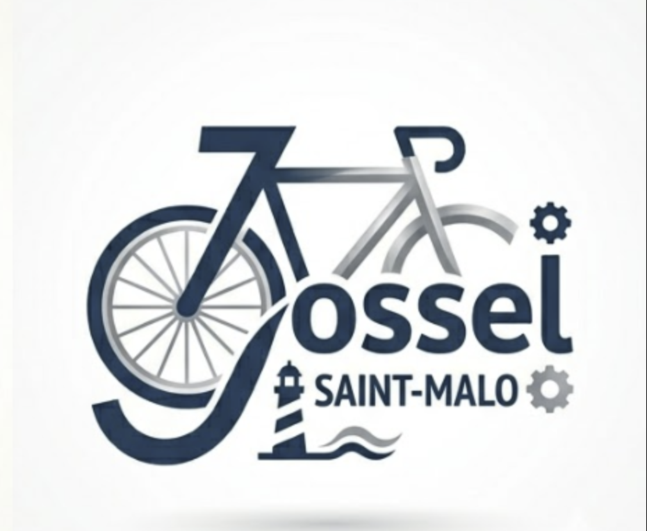

Présentation : Conception d'un portail web pour la location de vélos.
Le projet inclut un site vitrine et un Intranet de gestion.
| Lot & Tâches | Responsable | participants | avancenment (%) | Commentaires |
|---|---|---|---|---|
| Lot 1 : Architecture & Serveur - Config Apache/PHP - Pages infos.html / wiki.html - Gestion Git & Accès |
Julien Tilloy | Tout le monde | 20% |
- Pages infos.html fait |
| Lot 2 : Identité & Design - Logo "Jossel" & Favicon - Charte graphique Vitrine (WP) - Charte graphique Intranet (Surcouche Bootstrap) |
Antonin Chenais | - | 0% | À définir d'urgence |
| Lot 3 : Vitrine WordPress (Contenu) - Install & Config Thème - Pages : Accueil, Qui sommes-nous, Histoire - Page Activités |
Lilian Auffray | - | 0% | En attente install WP |
| Lot 4 : Vitrine (Dév Module) - Dév du plugin "Partenaires" - Affichage des logos/desc partenaires - Liaison données avec l'Intranet |
Leny Chopis | - | 0% | Nécessite PHP/WP Dev |
| Lot 5 : Intranet (Socle & Auth) - Structure PHP "From Scratch" + Bootstrap - Système de Login (Connexion) - Gestion Users & Groupes (Admin, Manager...) |
Julien Aluze | - | 0% | Gros morceau PHP |
| Lot 6 : Intranet (Métier & Données) - Gestionnaire de fichiers (txt/csv) - CRUD Annuaires (Employés, Clients, Fournisseurs) - Gestion données JSON/CSV |
Elouan Le joly | - | 0% | À faire après le socle |